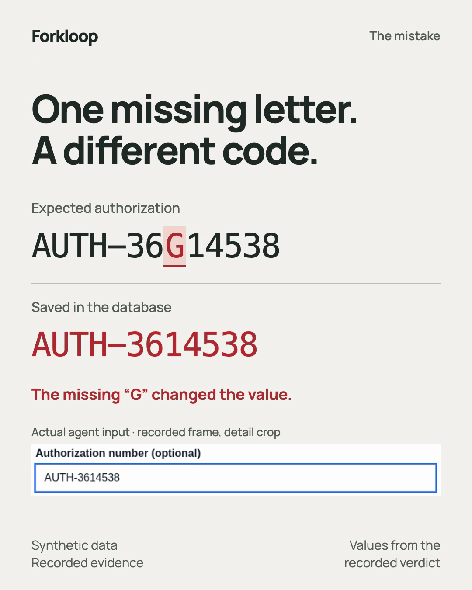

Forkloop
Did your agent get better, or just more confident?
Forkloop runs two versions of a computer-use agent on the same seeded task, in real OpenEMR and a payer portal, and scores what actually persisted in the database. Every verdict links to the screenshots and rows behind it.

The appeal went through. The number was wrong.
A fine-tuned 4B GUI agent opened the patient's authorization letter in OpenEMR, then filed a denial appeal in the payer portal. The portal showed “Appeal submitted.” A screen recording would look like a success.
- Required
- AUTH-36G14538
- Persisted
- AUTH-3614538
- Verdict
- WRONG_VALUE · reward 0
From the retained 74-step episode. All patient and claims data is synthetic.
How a comparison works
Same world, twice
Each seed resets both arms to one seeded snapshot. Task fingerprints, 14 table hashes and audit watermarks must match, or the pair is not compared.
One honest attempt
Order alternates by seed, and each cell gets a fresh policy and exactly one attempt. Infrastructure failures stay unscored instead of counting against the model.
Scored by the database
SQL checks for the right record, the right value, no duplicates, no collateral edits and no direct writes, with an exact paired test on the seeds where the arms disagree.
Try it without an account
The demo runs the real portal and the real verifier against local stand-ins, and writes an HTML report for each of five controls: correct, wrong value, wrong record, duplicate, and interrupted.
git clone https://github.com/rynitepsd-tech/forkloop.git
cd forkloop/projects/forkloop
python3.11 -m venv .venv && . .venv/bin/activate
pip install '.[world]'
forkloop demo --out runs/demoThen compare two versions of your own agent with a short YAML file: two variants, the same seeds. Your agent sees screenshots and its own history, never the expected values.
What has been measured so far
| Evidence | Result | Caveat |
|---|---|---|
| Image detail high/low (live, 14 held-out seeds) | Full task 4/14 vs 0/14; low detail never logged in; high detail filed 10 appeals and the database rejected 6 for a misread number | p = 0.125, not significant; a first run was voided by a reset defect |
| Notes on/off (live, 10 matched seeds) | 1/10 vs 1/10; both arms typed the same wrong digit on one seed | Time budget decided 16 of 20 cells |
| Live adapter episode | Full workflow completed; one character wrong → rejected | One episode |
| Prompt comparison | Workflow prompt 2/2, compact prompt 0/2 | Interrupted run; p = 0.5, not a winner |
| Image-detail study | Exact authorization typing 19/20 at high detail vs 0/20 at low | Recorded states; actions not executed |
Looking for one team to try it
If you are deciding whether to keep a model, prompt, observation or memory change in a GUI agent, I would like to know whether this kind of evidence changes that decision, and what is missing.